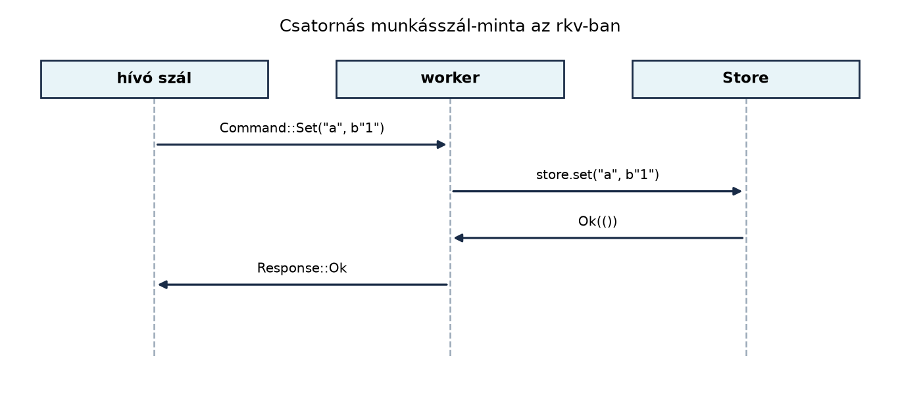

C++-ban a szálbiztos megosztott állapot kézi fegyelmet igényel: a
std::mutex és a védett adat külön tagváltozók, és a fordító
nem tudja, melyik zár melyik adatot védi. Ha elfelejtünk
lock_guard-ot írni, adatversenyt kapunk; ha rossz
sorrendben zárunk, holtpontot. A Rust ezt a típust egyesíti: a
Mutex<T> és az RwLock<T>
birtokolja a védett értéket, és a zár megszerzése egy
RAII guardot ad, amelyen keresztül csak a zár élettartama alatt
férhetünk az adathoz. Ez a Belső mutabilitás: Cell,
RefCell és a futásidejű kölcsönzés alfejezetben megismert
RefCell<T> szálbiztos párja: a zár futásidejű
kölcsönzést valósít meg, de ott nem pánikol kölcsönzési
szabálysértéskor, hanem blokkol.
Definíció. A std::sync::Mutex<T>
kölcsönös kizárást (mutual exclusion) biztosító szinkronizációs
primitív. A T érték a zár mögött él; a lock()
metódus LockResult<MutexGuard<'_, T>> értéket
ad vissza. A MutexGuard<'_, T> egy RAII guard, amely
Deref<T>-et és DerefMut<T>-et
implementál, tehát &T-ként vagy
&mut T-ként használható. Amikor a guard eldobódik
(például kimegy a hatókörből), a zár automatikusan felszabadul.
Szabály. A Mutex<T> akkor
Sync, ha T: Send; a
MutexGuard<'_, T> pedig Send, ha
T: Send, de soha nem Sync. Ez megakadályozza,
hogy a guardot több szálon keresztül használjuk.
Definíció. A std::sync::RwLock<T>
többszörös olvasó / egy író zárat biztosít. A read()
metódus RwLockReadGuard-ot, a write() metódus
RwLockWriteGuard-ot ad. Egyszerre több read
guard élhet, de write guard csak egyedül. A
RwLock nem támogatja a read-guard upgrade-jét
write-guard-ra, ezért a read lock alatt nem szabad write-ot kérni
ugyanarra a zárra, mert holtpontot kaphatunk.
Szabály. Ha egy szál pánikol, miközben a
Mutex vagy RwLock guardot tartja, a zár
mérgezetté (poisoned) válik. A következő
lock()/read()/write() hívás
Err(PoisonError<_>) értéket ad vissza; a belső adat
az into_inner() metódussal nyerhető ki. Gyakran
unwrap()-ot használunk, mert a pánik már megtörtént, és a
konzisztens állapotot a pánik miatt amúgy sem garantálhatjuk.
Definíció. Az std::sync::mpsc modul
több termelő, egy fogyasztó (multi-producer,
single-consumer) csatornát ad. A Sender<T>
klónozható, a Receiver<T> nem. A send()
blokkol, ha a puffer tele van, a recv() blokkol, ha üres.
Ha az összes Sender eldobódik, a recv()
Err(RecvError) értékkel tér vissza, és a
Receiver feletti for ciklus automatikusan
leáll.
Röviden. A std::sync::Condvar
feltételváltozót ad, amely egy MutexGuard-ot vár a
wait() hívásakor, elengedi a zárat, amíg értesítik, majd
újra megpróbálja megszerezni. Sok esetben a csatornák vagy a magasabb
szintű absztrakciók kiváltják. A külső parking_lot crate
gyorsabb, de API-kompatibilis alternatívát; a crossbeam
csatornái pedig több fogyasztót is támogatnak (lásd az ellenőrzési
hiányokat).
A C++-ban a zár és az adat külön van; a védett hozzáférést minden metódusban kézzel kell biztosítani:
#include <mutex>
#include <map>
#include <string>
#include <optional>
class Store {
std::mutex mtx;
std::map<std::string, std::string> data;
public:
void set(std::string key, std::string value) {
std::lock_guard<std::mutex> lock(mtx);
data[std::move(key)] = std::move(value);
}
std::optional<std::string> get(const std::string& key) {
std::lock_guard<std::mutex> lock(mtx);
auto it = data.find(key);
if (it != data.end()) return it->second;
return std::nullopt;
}
};Rustban a Mutex<HashMap<...>> magában
foglalja a zárat és az adatot, és a metódusok &self-et
vesznek, mert a zár belső mutabilitást ad:
use std::collections::HashMap;
use std::sync::Mutex;
pub struct Store {
data: Mutex<HashMap<String, String>>,
}
impl Store {
pub fn new() -> Self {
Self { data: Mutex::new(HashMap::new()) }
}
pub fn set(&self, key: String, value: String) {
let mut guard = self.data.lock().unwrap();
guard.insert(key, value);
}
pub fn get(&self, key: &str) -> Option<String> {
let guard = self.data.lock().unwrap();
guard.get(key).cloned()
}
}A kulcskülönbség: a Rust-fordító típusrendszerrel kényszeríti ki,
hogy a HashMap-et csak a MutexGuard-on
keresztül érjük el. A C++-ban semmi sem akadályozza meg, hogy a
data-t zár nélkül olvassuk vagy írjuk.
A legegyszerűbb szálbiztos megosztott állapot egy
Arc<Mutex<i32>>. Több szál növeli a számlálót,
és a MutexGuard RAII-ja biztosítja a zár
felszabadítását:
use std::sync::{Arc, Mutex};
use std::thread;
fn main() {
let counter = Arc::new(Mutex::new(0));
let mut handles = vec![];
for _ in 0..10 {
let counter = Arc::clone(&counter);
let handle = thread::spawn(move || {
for _ in 0..1000 {
let mut guard = counter.lock().unwrap();
*guard += 1;
}
});
handles.push(handle);
}
for handle in handles {
handle.join().unwrap();
}
println!("végső érték: {}", *counter.lock().unwrap());
}Várt kimenet (gépfüggő sorrendű, de a végső érték determinisztikus):
végső érték: 10000. Ha a zár kimaradna, adatverseny jönne
létre; a Rust ezt a Sync határral megakadályozza, mert a
Mutex nélkül az Arc<i32> nem lenne
Sync, és a thread::spawn nem fordulna le.
Munkakönyvtár: ~/rust-labor/rkv/. A
labor célja az rkv-core crate Storage
traitjének és MemStore implementációjának szálbiztossá
tétele, egy Store wrapper bevezetése, valamint egy
munkásszál-minta csatornával.
Storage trait átalakításaKeressük meg az rkv-core/src/lib.rs-ben (vagy a
storage.rs modulban) a Storage traitet. A
korábbi alfejezetekben a metódusok &mut self-et
használtak, hogy a belső HashMap-et módosítsák. A
szálbiztos változathoz minden metódus &self legyen,
mert a zár belül ad mutabilitást:
// rkv-core/src/storage.rs
use std::collections::HashMap;
use std::sync::{Arc, RwLock};
use crate::error::Error;
pub trait Storage: Send + Sync {
fn get(&self, key: &str) -> Result<Option<Vec<u8>>, Error>;
fn set(&self, key: String, value: Vec<u8>) -> Result<(), Error>;
fn delete(&self, key: &str) -> Result<bool, Error>;
fn list(&self, prefix: &str) -> Result<Vec<String>, Error>;
}A Send + Sync szuperhatárok jelzik, hogy a trait
implementációi több szálon át használhatók. (A pontos hibakezelést lásd
a Saját hibatípusok: enum-hibák, thiserror,
anyhow alfejezetben.)
MemStore szálbiztosításaA MemStore a belső HashMap-et
Arc<RwLock<...>>-ban tárolja, így a példány
klónozható, és minden klón ugyanarra az állapotra mutat:
// rkv-core/src/storage.rs
#[derive(Clone)]
pub struct MemStore {
data: Arc<RwLock<HashMap<String, Vec<u8>>>>,
}
impl MemStore {
pub fn new() -> Self {
Self {
data: Arc::new(RwLock::new(HashMap::new())),
}
}
}
impl Storage for MemStore {
fn get(&self, key: &str) -> Result<Option<Vec<u8>>, Error> {
let guard = self.data.read().unwrap();
Ok(guard.get(key).cloned())
}
fn set(&self, key: String, value: Vec<u8>) -> Result<(), Error> {
let mut guard = self.data.write().unwrap();
guard.insert(key, value);
Ok(())
}
fn delete(&self, key: &str) -> Result<bool, Error> {
let mut guard = self.data.write().unwrap();
Ok(guard.remove(key).is_some())
}
fn list(&self, prefix: &str) -> Result<Vec<String>, Error> {
let guard = self.data.read().unwrap();
let mut keys: Vec<String> = guard
.keys()
.filter(|k| k.starts_with(prefix))
.cloned()
.collect();
keys.sort();
Ok(keys)
}
}Store wrapperA Store egy vékony, klónozható réteg az
Arc<dyn Storage> felett, amely delegál a trait
metódusokra. Mivel a Storage metódusai
&self-et vesznek és a trait Send + Sync,
az Arc<dyn Storage> szálbiztosan megosztható:
// rkv-core/src/store.rs
use std::sync::Arc;
use crate::error::Error;
use crate::storage::Storage;
#[derive(Clone)]
pub struct Store {
inner: Arc<dyn Storage>,
}
impl Store {
pub fn new<S: Storage + 'static>(storage: S) -> Self {
Self {
inner: Arc::new(storage),
}
}
pub fn get(&self, key: &str) -> Result<Option<Vec<u8>>, Error> {
self.inner.get(key)
}
pub fn set(&self, key: String, value: Vec<u8>) -> Result<(), Error> {
self.inner.set(key, value)
}
pub fn delete(&self, key: &str) -> Result<bool, Error> {
self.inner.delete(key)
}
pub fn list(&self, prefix: &str) -> Result<Vec<String>, Error> {
self.inner.list(prefix)
}
}Írjunk egy tesztet, amely több szálból hajt végre SET
műveleteket, majd ellenőrzi a tároló állapotát:
// rkv-core/tests/store_threads.rs
use rkv_core::{Store, MemStore};
use std::sync::Arc;
use std::thread;
#[test]
fn concurrent_set_and_get() {
let store = Arc::new(Store::new(MemStore::new()));
let mut handles = vec![];
for i in 0..4 {
let store = Arc::clone(&store);
handles.push(thread::spawn(move || {
for j in 0..100 {
let key = format!("kulcs-{}-{}", i, j);
let value = format!("ertek-{}-{}", i, j).into_bytes();
store.set(key, value).unwrap();
}
}));
}
for handle in handles {
handle.join().unwrap();
}
let keys = store.list("kulcs-").unwrap();
assert_eq!(keys.len(), 400);
assert!(store.get("kulcs-3-99").unwrap().is_some());
}Futtassuk: cargo test -p rkv-core. Várt kimenet: a teszt
függvények sikeresek, a concurrent_set_and_get is
átmegy.
A közvetlenül megosztott Store helyett gyakran
kényelmesebb egy munkásszálat (worker) indítani, amely egy csatornán
fogadja a parancsokat, és egy másikon küldi vissza a válaszokat. Ez
centralizálja a zárolást, és a hívó szálak nem blokkolnak a záron.
Először definiáljunk egy parancs- és választípust. A
Command enum hasonló a fő típusokhoz, a
Response a szerver válaszait képviseli (lásd a Az rkv mintaprojekt indítása alfejezetet):
// rkv-core/src/worker.rs
use std::sync::mpsc;
use std::thread;
use crate::error::Error;
use crate::store::Store;
pub enum Command {
Get(String),
Set(String, Vec<u8>),
Delete(String),
List(Option<String>),
}
pub enum Response {
Value(Vec<u8>),
Ok,
NotFound,
List(Vec<String>),
Err(Error),
}
pub struct Worker {
store: Store,
rx: mpsc::Receiver<Command>,
tx_resp: mpsc::Sender<Response>,
}
impl Worker {
pub fn spawn(store: Store) -> (mpsc::Sender<Command>, mpsc::Receiver<Response>) {
let (tx_cmd, rx) = mpsc::channel();
let (tx_resp, rx_resp) = mpsc::channel();
let worker = Worker { store, rx, tx_resp };
thread::spawn(move || worker.run());
(tx_cmd, rx_resp)
}
fn run(&self) {
for cmd in self.rx.iter() {
let resp = match cmd {
Command::Get(key) => match self.store.get(&key) {
Ok(Some(v)) => Response::Value(v),
Ok(None) => Response::NotFound,
Err(e) => Response::Err(e),
},
Command::Set(key, value) => match self.store.set(key, value) {
Ok(()) => Response::Ok,
Err(e) => Response::Err(e),
},
Command::Delete(key) => match self.store.delete(&key) {
Ok(_) => Response::Ok,
Err(e) => Response::Err(e),
},
Command::List(prefix) => {
let p = prefix.unwrap_or_default();
match self.store.list(&p) {
Ok(keys) => Response::List(keys),
Err(e) => Response::Err(e),
}
}
};
if self.tx_resp.send(resp).is_err() {
break; // a válaszcsatorna lezárult, nincs több kliens
}
}
}
}A spawn elindítja a munkásszálat, és visszaadja a
parancssender és válaszreceiver párt. A hívó szálak a
Command-okat küldik, és a Response-okat
fogadják. A for cmd in self.rx.iter() ciklus automatikusan
leáll, ha az összes parancssender eldobódik.
A következő diagram a munkásszál és a hívó szál közötti üzenetváltást mutatja:

A hívó oldal használata:
// rkv-cli/src/main.rs (részlet)
use rkv_core::{MemStore, Store, worker::{Command, Response}};
use std::sync::mpsc;
fn main() {
let store = Store::new(MemStore::new());
let (tx, rx) = rkv_core::worker::Worker::spawn(store);
tx.send(Command::Set("nev".into(), "ertek".into_bytes())).unwrap();
tx.send(Command::Get("nev".into())).unwrap();
// a válaszok sorrendje megegyezik a parancsok sorrendjével
let resp = rx.recv().unwrap(); // Response::Ok
let resp = rx.recv().unwrap(); // Response::Value(b"ertek")
println!("{:?}", resp); // itt a példában nem kell Debug, csak szemléltetés
}A Response enumhoz #[derive(Debug)]
szükséges, ha ki szeretnénk írni.
Több hívó szál esetén klónozzuk a tx-et, és minden szál
a saját klónján keresztül küld parancsot. A munkásszál sorosan dolgozza
fel őket, így a Store zárolása nem okoz versenyt sem.
A módosítások után ellenőrizzük a workspace-t:
cargo test a teljes workspace-re, és
cargo clippy --all-targets -- -D warnings. Várt kimenet:
minden teszt zöld, és nincs figyelmeztetés.
Továbbvitt eredmény. A szálbiztos Store
típus (rkv-core/src/store.rs) és a Storage
trait (rkv-core/src/storage.rs) a MemStore
Arc<RwLock<HashMap>> implementációjával,
valamint a Worker csatornás mintája
(rkv-core/src/worker.rs) alapot ad a Atomikus műveletek és memóriarendezés alfejezetnek,
a hálózati szerver (Az rkv hálózati szerver: TCP,
protokoll, kecses leállás) és a Záróprojekt: az
rkv teljes rendszerként alfejezeteknek.
MutexGuard-ra hivatkozó referenciát próbálunk kivinni a
guard hatóköréből, a borrow checker hibázik. Például:let guard = mutex.lock().unwrap();
let reference = &guard;
drop(guard);
println!("{}", *reference); // E0505: cannot move out of guard because it is borrowedA hibaüzenet (E0505) arra figyelmeztet, hogy a guard eldobása után a referencia érvénytelen. A helyes megoldás, hogy a hozzáférést a guard hatókörén belül végezzük, vagy az adatot klónozzuk.
RwLock read guardja mellett nem lehet ugyanazon a szálon
write guardot szerezni, mert az holtponthoz vezethet. Például:let read_guard = rwlock.read().unwrap();
let write_guard = rwlock.write().unwrap(); // itt a szál örökre várA megoldás: vagy ne szerezzünk write-ot read alatt, vagy használjunk
try_write()-ot, és ha kell, engedjük el a read guardot
előtte.
Poisoning elrejtése unwrap()-pel.
Ha egy szál pánikol a zár alatt, a lock().unwrap() pánikot
dob, ami könnyen hibás hibakezeléshez vezet. A jobb megoldás a
unwrap_or_else(|e| e.into_inner()) mintával a belső adat
kinyerése, ha a pánik utáni állapot is konzisztensnek
tekinthető.
Csatorna lezárás nem kezelése. Ha az összes
Sender eldobódik, a recv() Err-t
ad. A for ciklus automatikusan leáll, de a kézi
recv() hívásoknál a hiba elágazást kezelni kell, különben a
program pánikolhat.
Tekintsük a következő Rust kódot. Lefordul-e? Ha nem, mi a hibakód, és mi a baj?
use std::sync::{Arc, Mutex};
fn main() {
let data = Arc::new(Mutex::new(vec![1, 2, 3]));
let data_clone = Arc::clone(&data);
let handle = std::thread::spawn(move || {
let guard = data_clone.lock().unwrap();
println!("{:?}", *guard);
});
let guard = data.lock().unwrap();
println!("{:?}", *guard);
handle.join().unwrap();
}Az alábbi C++ osztály egy szálbiztos gyűjtőt valósít meg. Írja át
Rustra Arc<Mutex<Vec<T>>> használatával
úgy, hogy a push és a get_all metódusok
szálbiztosak legyenek, és a típus Clone-olható legyen.
#include <mutex>
#include <vector>
#include <string>
class Collector {
std::mutex mtx;
std::vector<std::string> items;
public:
void push(std::string item) {
std::lock_guard<std::mutex> lock(mtx);
items.push_back(std::move(item));
}
std::vector<std::string> get_all() {
std::lock_guard<std::mutex> lock(mtx);
return items;
}
};A laborban elkészített Store-hoz adjon egy
#[derive(Clone)]-t, és írjon egy új tesztet
rkv-core/tests/worker.rs néven, amely elindítja a
Worker-t, több szálból küld Command::Set
parancsokat, majd egy Command::List parancsot, és
ellenőrzi, hogy a visszaadott kulcsok száma megegyezik a várt értékkel.
A teszt használjon Arc-ot a Store
megosztásához, ha szükséges.
A következő kód holtpontot okozhat két RwLock-kal.
Magyarázza el, miért, és adjon két lehetséges javítást: (1) zársorrend
rögzítése, (2) try_write használata visszalépéssel.
use std::sync::{Arc, RwLock};
fn transfer(from: &RwLock<i32>, to: &RwLock<i32>) {
let mut a = from.write().unwrap();
let mut b = to.write().unwrap();
*a -= 1;
*b += 1;
}
fn main() {
let a = Arc::new(RwLock::new(10));
let b = Arc::new(RwLock::new(20));
// két szál: transfer(&a, &b) és transfer(&b, &a)
}A kód lefordul, és a kimenet gépfüggő sorrendű, de mindkét szál
kiírja a vektort. A Mutex zárja miatt az adathozzáférés
szálbiztos; a guard a println! után
automatikusan eldobódik. A handle.join() biztosítja a szál
befejezését, de mivel a data Arc-ja a fő
szálban is él, nincs adatverseny.
use std::sync::{Arc, Mutex};
#[derive(Clone)]
pub struct Collector {
items: Arc<Mutex<Vec<String>>>,
}
impl Collector {
pub fn new() -> Self {
Self {
items: Arc::new(Mutex::new(Vec::new())),
}
}
pub fn push(&self, item: String) {
let mut guard = self.items.lock().unwrap();
guard.push(item);
}
pub fn get_all(&self) -> Vec<String> {
let guard = self.items.lock().unwrap();
guard.clone()
}
}A Clone az Arc klónozásával megosztja a
belső állapotot, így minden klón ugyanazt a gyűjtőt látja.
A Worker teszt:
// rkv-core/tests/worker.rs
use rkv_core::{MemStore, Store, worker::{Command, Response}};
use std::sync::Arc;
use std::thread;
#[test]
fn worker_processes_commands() {
let store = Store::new(MemStore::new());
let (tx, rx) = rkv_core::worker::Worker::spawn(store);
let mut handles = vec![];
for i in 0..4 {
let tx = tx.clone();
handles.push(thread::spawn(move || {
for j in 0..100 {
let key = format!("worker-{}-{}", i, j);
tx.send(Command::Set(key, b"ertek".to_vec())).unwrap();
}
}));
}
for handle in handles {
handle.join().unwrap();
}
tx.send(Command::List(Some("worker-".into()))).unwrap();
match rx.recv().unwrap() {
Response::List(keys) => assert_eq!(keys.len(), 400),
_ => panic!("várt Response::List"),
}
}Futtatás: cargo test -p rkv-core --test worker. A teszt
sikeres, mert a worker sorosan dolgozza fel a parancsokat, és a list
végén 400 kulcsot lát.
A holtpont oka: ha az egyik szál from-ként
a-t, to-ként b-t zárol, a másik
pedig fordítva, mindkettő megkapja az első zárat, és a másodikra vár;
egyik sem engedi el az elsőt. Megoldás 1: minden szál rögzített
sorrendben zár, például a RwLock pointerek címe szerint,
vagy azonos sorrendű paraméterekkel. Megoldás 2:
try_write() hívás, és ha sikertelen, az első zár eldobása
után újra próbálkozás.
A Mutex<T> és RwLock<T> a Rust
szálbiztos belső mutabilitás alapjai: a zár birtokolja a védett adatot,
a guard RAII-ja biztosítja a felszabadítást. A Mutex egy
írót, a RwLock több olvasót vagy egy írót enged. Az
mpsc csatornák több termelő / egy fogyasztó üzenetküldést
adnak. A laborban az rkv Storage traitjét
&self metódusokra alakítottuk, a MemStore
Arc<RwLock<HashMap>>-ot kapott, és bevezettük a
klónozható, Arc<dyn Storage>-ra épülő
Store típust. A Worker csatornás
munkásszál-mintát valósít meg a parancsok feldolgozására.
Továbbvitt eredmény: a szálbiztos Store
(rkv-core/src/store.rs) a Storage traittel és
a MemStore Arc<RwLock<HashMap>>
alapú implementációjával, valamint a Worker csatornás
mintája (rkv-core/src/worker.rs) a Atomikus műveletek és memóriarendezés, a Az rkv hálózati szerver és a Záróprojekt alfejezetek alapja.
A std::sync::Mutex, RwLock és
mpsc stabil API-ját a hivatalos std
dokumentáció alapján ismertettem. A parking_lot és
crossbeam crate-ek pontos verzióit és API-it a docs.rs-en
ellenőrizni kell (főverzió: parking_lot = "0.12",
crossbeam = "0.8"). A RwLock
fairness-viselkedése platformfüggő; a
lock()/read()/write()
unwrap() mintája a poisoning kezelésére csak akkor
biztonságos, ha a pánik utáni állapot nem okoz további inkonzisztenciát.
A Worker csatornás példa a Response enum
Debug implementációját igényli, ha kiírjuk; ez a
thiserror-os Error típusnál automatikus lehet.
A pontos hibaüzenet szövege (pl. E0505) verziófüggő.